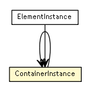

se.cambio.cds.model.facade.execution.vo
Class ContainerInstance

java.lang.Object
 se.cambio.cds.model.facade.execution.vo.ContainerInstance
se.cambio.cds.model.facade.execution.vo.ContainerInstance
- All Implemented Interfaces:
- Serializable
public class ContainerInstance
- extends Object
- implements Serializable
- See Also:
- Serialized Form
ContainerInstance
public ContainerInstance(String id,
ContainerInstance parentContainerInstance)
getId
public String getId()
setId
public void setId(String id)
getParentContainerInstance
public ContainerInstance getParentContainerInstance()
setParentContainerInstance
public void setParentContainerInstance(ContainerInstance parentContainerInstance)
clone
public ContainerInstance clone()
- Overrides:
clone in class Object
containsOrContainedIn
public boolean containsOrContainedIn(ContainerInstance containerInstance)
Copyright © 2013 Cambio. All Rights Reserved.